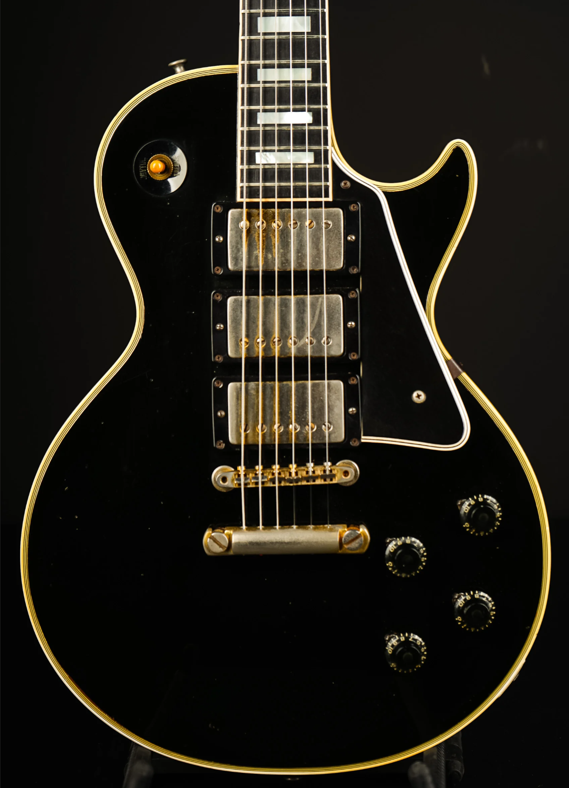
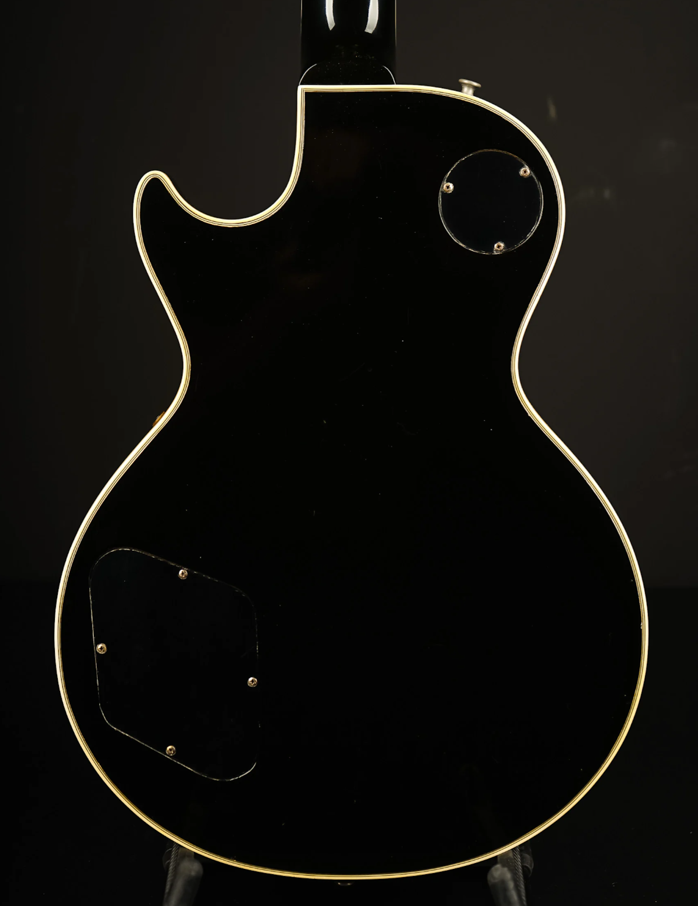

Browse Our Catalog


1958 Fender Stratocaster
1958 Fender Stratocaster in very good condition, finished in 3-tone sunburst. This is an all original guitar except for the high e string tuner which is correct style and period. Excellent round full neck profile. All original pickups sound incredible, lots of output. The guitar is very resonant and lively and weighs 3,4kg. Includes original tweed case.
1953 Fender Telecaster Blonde
1953 Fender Telecaster in very good condition. It is currently set up with modern wiring but could be easily restored back to its original wiring harness. An exceptionally light and resonant blackguard with a wonderful feeling neck. The guitar weighs in at 3,15kg. Comes with the original leather gigbag.
1960 Fender Stratocaster
1960 Fender Stratocaster in great condition, with factory original Olympic White finish beautifully aged. Alder body with Maple neck and Brazilian rosewood fretboard. The pickups, wiring and hardware are original to the guitar. The guitar weighs in at 3,30kg. Includes original tweed case.
1954 Gibson Les Paul Gold Top
1954 Gibson Les Paul in excellent condition. All around an exceptional early Les Paul with fantastic sounding P90s. Gold top with gold finish back and sides. With the exception of one tuner on the high e string, this is all original. Frets are all original, original hardware, and original pickups. No history of any major repairs, and currently playing great. Guitar weighs 4,05kg. Comes with the original hard shell case which is in excellent condition as well.


1958 Gibson Les Paul Custom
1958 Gibson Les Paul Custom "Black Beauty" in pristine condition. This guitar is in all original state save for a professional refret. Pickups are original PAF, and the tuning machines are made by Grover. It weighs is in at 4,52kg. Comes with an original vintage Gibson hard case.
1963 Gibson Les Paul SG Custom
1963 Gibson Les Paul SG Custom in great condition. A beautiful SG from the early days before they dropped the Les Paul name, in original white finish. This one has the big neck profile, the Maestro Vibrola tremolo and PAF pickups. Bridge has replaced saddles and there once have been Grover tuners installed. It weighs in at 4,40kg. Comes with an original vintage Gibson hard case.
1964 Gibson Firebird V Custom
1963 Gibson Firebird V Custom in great condition. This one has undergone a full refret. It features two mini-humbuckers, a striking Maestro Vibrola tremolo, trapezoid inlays on the rosewood fingerboard, banjo-style tuners, and a mahogany "winged" body construction. It weighs in at 4,36kg. Comes with a 1990s brown case with pink plush interior.
1966 Gibson ES-335
1966 Gibson ES-335 in excellent condition. This Gibson has been refretted, the fingerboard has been rebound, and the guitar has been lightly oversprayed. It was constructed with a laminate maple body and a mahogany neck with an ebony fingerboard featuring mother pearl block inlays. The guitar features two original PAF pickups and all gold hardware. The guitar weighs in at 4.35kg. Comes with the original brown hardshell case.